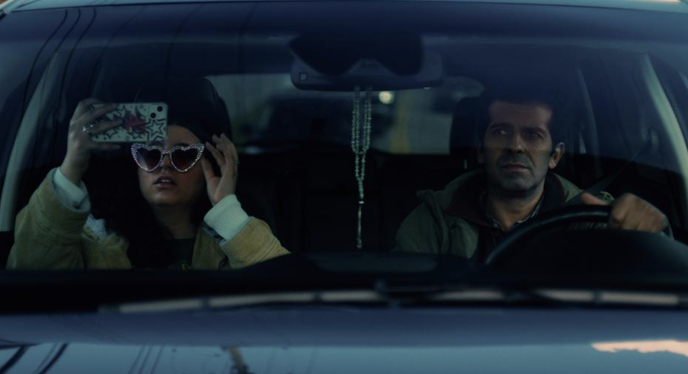

Baba I'm Fine VFX editor and supervisor on SXSW-selected short film written and directed by Karina Dandashi. Learn MoreFilm Production
Before the briefs, there were scripts.
Visual Effects
Festival-selected short films, VFX supervision, editorial precision, and post-production problem solving.
Writing and Directing

Short films
Films I wrote, directed, and produced in Costa Rica and Atlanta.
2017 · Costa Rica
The Happiness Machine
“A depressed inventor quits his job to fulfill his lifelong dream: building a machine that helps people find what makes them happy.”
I wrote, directed, and produced this film on a $1,500 budget. We shot in San José with actors from Costa Rica's theater and film community. Sinart Channel aired it nationwide in 2020. The project had been with me for more than 4 years; I wrote the screenplay 7 years before I got the chance to make it.
Watch the film2018 · Short film
A Trip to Remember
A college teen stays in for his first pot brownie adventure. After eating too many, he has to face his greatest fears to survive the night.
I wrote, shot, produced, directed, and edited this short with Isaac Boruchowicz, who also stars. We had one bedroom set and less than 4 hours to shoot after a scheduling change.
Watch the filmDocumentaries
Research and documentary projects made at Emory University.
2020 · Emory University
A New Coke
The story of Roberto Goizueta's career as CEO of The Coca-Cola Company from 1981 to 1997, and the impact of the New Coke launch.
I co-wrote and co-directed the documentary with Isaac Boruchowicz for an independent study in Emory's Film and Media Studies department, supervised by director Rob Schmidt Barracano. We made it over 8 months, from November 2019 through May 2020, editing by phone and text during the COVID-19 lockdown.
Watch the documentary2020 · Emory University
Disney Company · Purpose Film
Made during a semester long Emory Ideation class with Professor Joey Reiman. Our team studied Disney's corporate purpose and developed the idea “the fairytale is true.”
The film presents the idea that real life can hold the wonder of a fairytale, and that companies can help protect that sense of possibility. The class drew on Professor Reiman's claim that companies with a clear purpose can be more than 1,000% more successful than companies without one.
Watch the filmAwards
Kiki McCabe and Agnes Nixon Screenwriting Award
Won for the screenplay Tightrope from Emory University's Creative Writing department. The award was presented by Pulitzer Prize-winning poet Dr. Jericho Brown.
The published credits page also described the department as ranked #1 in the U.S. at the time.
Warner Bros. Aspiring Content Creators Fellowship
Researched Gen Z streaming behavior and worked with executives from HBO, Cartoon Network, and Turner Classic Movies.